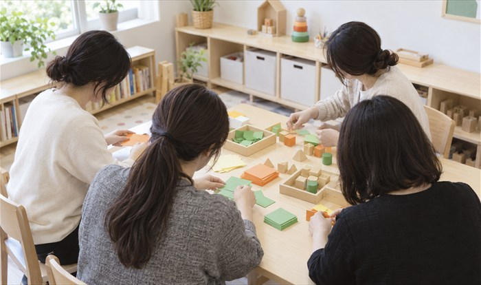
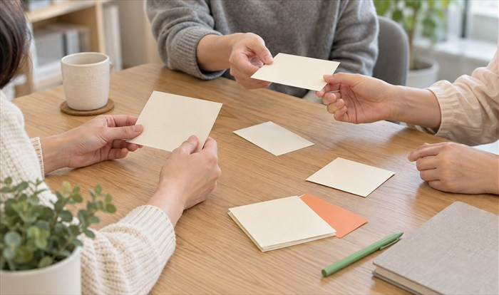
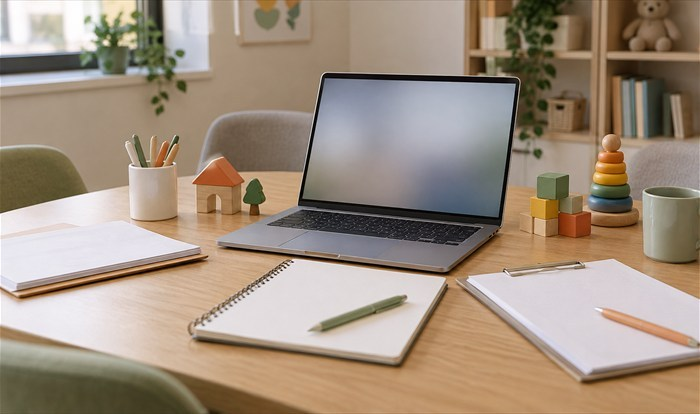
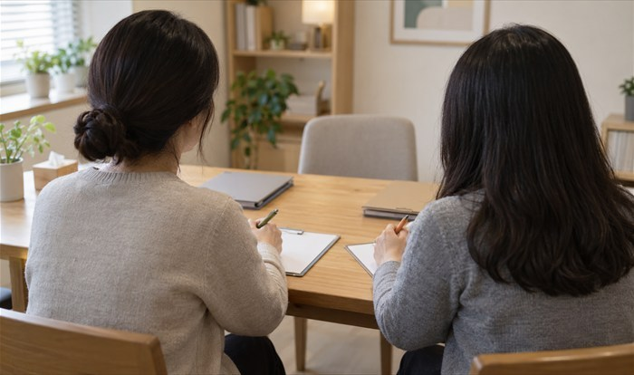
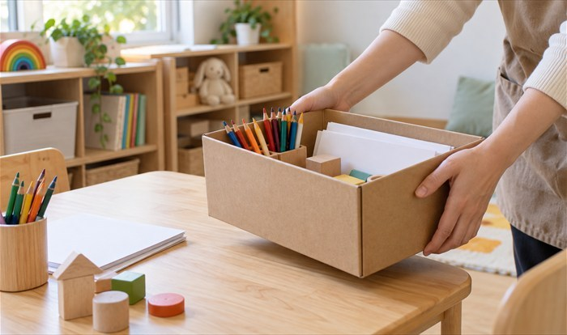
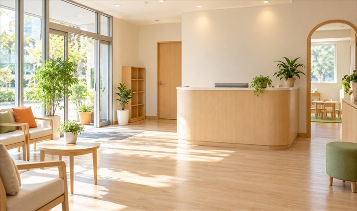
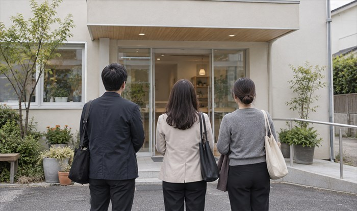
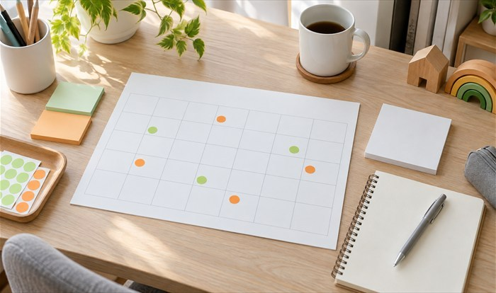

ARAMGYEOL마음특성
체크
체크

MOU
협력 분야
교육현장 치료교육 지원

교사 사례코칭
교실에서 반복되는 어려움을 관찰하고 지원 순서와 기록 방법을 함께 정합니다

교사 실무교육
교실에서 반복되는 어려움을 관찰하고 지원 순서와 기록 방법을 함께 정합니다

아람결 교실지원
Classroom Support Program
아동별 상담 목표와 교실 대응안을 협의정서행동 코칭
교사가 감정 신호를 읽고 대화를 이어 가는 방법을 사례로 연습합니다
Teacher Care Session

교사 회복 프로그램
업무 스트레스와 소진 신호를 점검하고 회복 계획을 세웁니다
교사의 강점과 한계를 확인해 지속 가능한 역할 범위를 정합니다
아람결 현장연수·워크숍

아동 발달 이해

지원 계획 실습
관찰 기록과 수업 대응
아동별 반응 차이를 반영한 교실 대화법

사회정서 활동 구성법
실제 교실 사례로 대응 순서를 작성하는 워크숍

아동 종사자 면담교육
아동 사례 자문